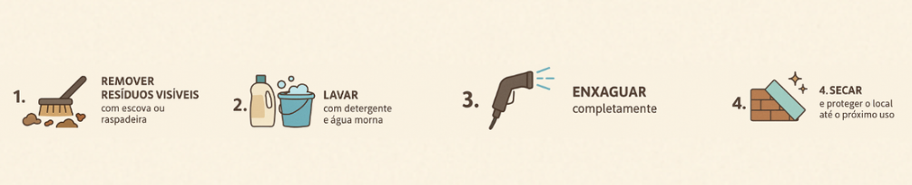
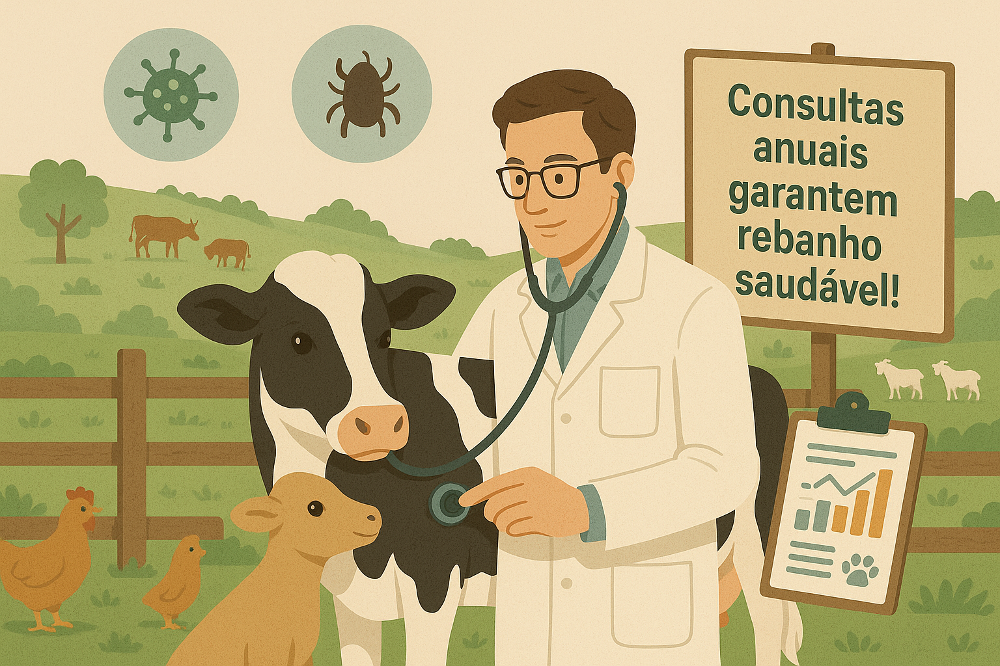

- Alimentação adequada
Dieta Balanceada
Proteínas + Carboidratos + Gorduras + Vitaminas + Minerais
Qualidade dos Alimentos
Frescos, limpos e próprios para consumo
Adequação ao Animal
Espécie, idade e fase produtiva
Suplementação Mineral
Essencial para saúde e produtividade
Água Sempre Disponível
Fundamental para hidratação e metabolismo
Orientação Técnica
Consultar veterinário para melhores resultados
- Higienização
-Passo 1: Remover Resíduos Visíveis
Retirar fezes, restos de alimentos e sujeira aparente das superfícies
Passo 2: Lavar com Detergente e Água Morna
Use neutro e esfregue bem com água morna para soltar a sujeira grudada
Passo 3: Enxaguar Completamente
Enxágue toda a área com água limpa, removendo resíduos de detergente e sujeira
Passo 5: Secar e Proteger o Local
Deixe o ambiente secar totalmente antes de permitir o retorno dos animais.
Se possível, mantenha o local protegido de poeira e sujeira até o próximo uso.

- Consultas Regulares ao Veterinário
Por que fazer consultas regulares?
Diagnóstico precoce de doenças
Prevenção de enfermidades comuns
Controle de parasitas internos e externos
Orientações personalizadas para cada espécie
Registro e monitoramento da saúde do rebanho
Quando agendar?
Pelo menos uma vez ao ano para animais adultos saudáveis
Consultas mais frequentes para filhotes, gestantes e animais idosos
Agende sua consulta e cuide do seu patrimônio!
